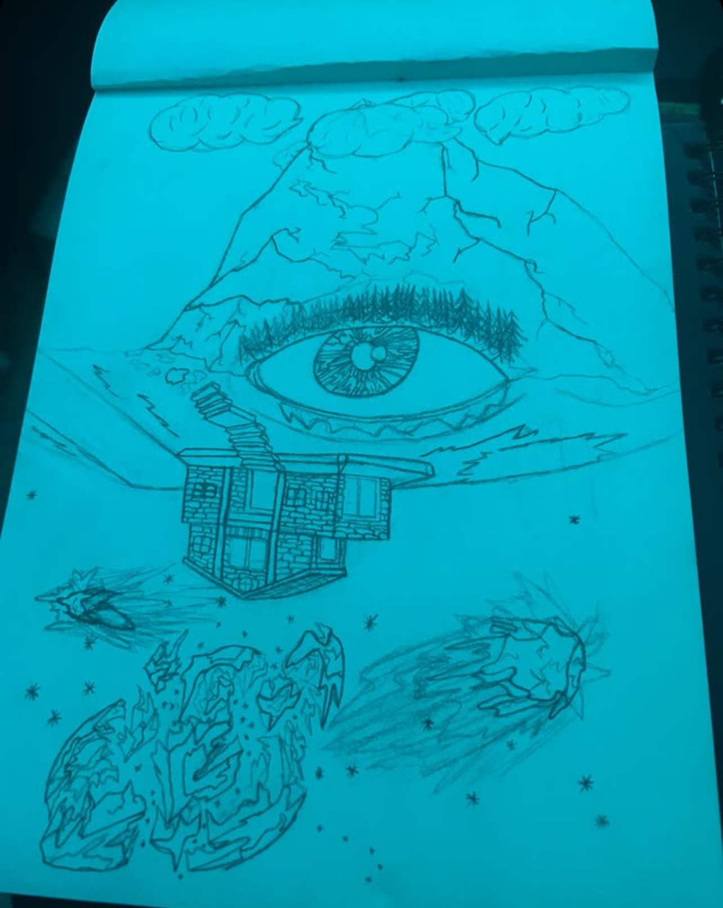

My ArtWorks
So my idea for this page is it would be nice to have a place were I can upload the artworks and ideas I like that I make and give a little brief explanation on my artworks too.
Little list of what i like to draw
- POLAR BEARS
- landscapes
- Planets/Space
- Trees
- animals
- characters
Polar Bear Jets

I was working on an art project last semseter im pretty sure and when i finished i wanted to continue using stipling.So i decided i was going to draw a polar bear, and sense i really like hoodies i decided id give him a hoodie why not. Im also not very good at drawing feet so i decided to give im rocket jets for legs.
eyescape

I was told to do a practice draft using a human body part in a landscape. So i decided to make an eye like a lake changing universes as it flips over. And i am pretty happy with this picture i made it in like 2023 and im still very proud of it.
Scared Bear

With this drawing, its actually one of my favorites like ever. I was wanting to draw a polar bear standing up because i really love drawing polar bears. I also really enjoy putting different styles of horns on to creatures that dont typically have horns. I also found out i really enjoy make things destroyed like falling apart or expolading in my drawings so i was really happy with the horns and halo i gave him too. An with the burn scars, i Love putting those onto creatures because it adds more detail and story into the picture. I got kinda decent at drawing the burn scars after looking at someones explanintion on how to shade and draw the scars. I would also actively study closly to how my wounds and scars would heal because it gave me more of a realistic understanding on what stage of the healing process i should give the creature. This drawing Its got a good amount of issues i could go back in and fix but i would also risk it looking worse so im happy with were it stands.
Burn Scar tatorial

With this one i created it online back in like i think 9th to 10th grade maybe, and i really liked using it for the background of many of my pieces because i was really happy with how it came out.

I really enjoyed mkaing this one because i based it around one of the sites that i would love to visit in tennesee. i also based the mountain of photos i found on line
photo of landscape
©2025 copyright My awesome sauce artworks By:Vernon Stead